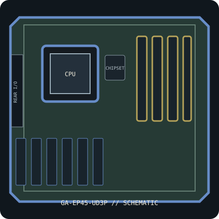

[ INDIVIDUAL COMPONENT // SYSTEM BOARD ]
GIGABYTE GA-EP45-UD3P (rev. 1.0)
Intel P45 / LGA775 ATX platform, 2008. PCB rev. 1.0, DDR2, CrossFire-capable PCIe layout and exact CPU/BIOS list. This record identifies one exact SKU/revision; verify the silkscreened board marking before firmware or component selection.

IDENTIFICATION: This entry is for GA-EP45-UD3P, PCB revision 1.0. Similar family names, chipset stepping and board revisions may use incompatible BIOS, layouts or connectors.
Specifications & compatibility
| Exact board / PCB revision | GA-EP45-UD3P — PCB revision 1.0 |
|---|---|
| Platform / socket / chipset | 2008 Intel desktop platform; LGA775; Intel P45 Express + ICH10R |
| CPU compatibility | LGA775 Intel Core 2 Quad/Duo and qualified Pentium/Celeron CPUs listed in GIGABYTE’s GA-EP45-UD3P rev. 1.0 table, subject to stepping, FSB and minimum BIOS. |
| Form factor / dimensions | ATX, 305 × 244 mm |
| Memory | Four DDR2 DIMMs, up to 16 GB dual-channel non-ECC unbuffered DDR2; memory overclock profiles depend on CPU and DIMMs. |
| Expansion | Two PCIe 2.0 x16 slots (x16 or x8/x8), three PCIe x1 and two PCI slots. |
| Storage | Six ICH10R SATA 3 Gb/s ports and two GIGABYTE SATA2 ports; IDE and floppy connectors. Manual details RAID, eSATA and lane/controller limitations. |
| External I/O | Rear PS/2, USB 2.0, IEEE 1394, Gigabit Ethernet, analog HD audio and S/PDIF; front USB/FireWire via internal headers. |
| BIOS / firmware support | DualBIOS and Q-Flash. Select GA-EP45-UD3P rev. 1.0 support files and check exact CPU minimum BIOS before upgrade or processor substitution. |
| PSU / case compatibility | ATX tower supporting the standard 305 × 244 mm footprint and board standoffs. Connect the 24-pin main power and 8-pin CPU ATX12V; use suitable PSU capacity for installed CPU/GPUs. |
Installation and service notes
Confirm the exact CPU, minimum BIOS, DIMM type/capacity and supported slot/port mapping in the board-specific vendor support documents before purchase or installation. Socket fit is not proof of processor support; similarly named board firmware must not be cross-flashed.
Use ESD-safe handling, inspect the board for socket damage, leakage and corrosion, and keep loose screws or conductive debris away from the PCB. Check the case standoffs, PSU leads and cooler clearance against the manual before first power-on.
Manufacturer and manual sources
- GIGABYTE GA-EP45-UD3P rev. 1.0 specificationsOfficial manufacturer specification entry for this model.
- GIGABYTE GA-EP45-UD3P user manual (official PDF)Official manufacturer manual or revision-specific downloads for installation, CPU compatibility and BIOS support.
Specifications are archived for identification, not a guarantee that an aged board or used component is functional. Use the exact-revision vendor materials for final compatibility decisions.